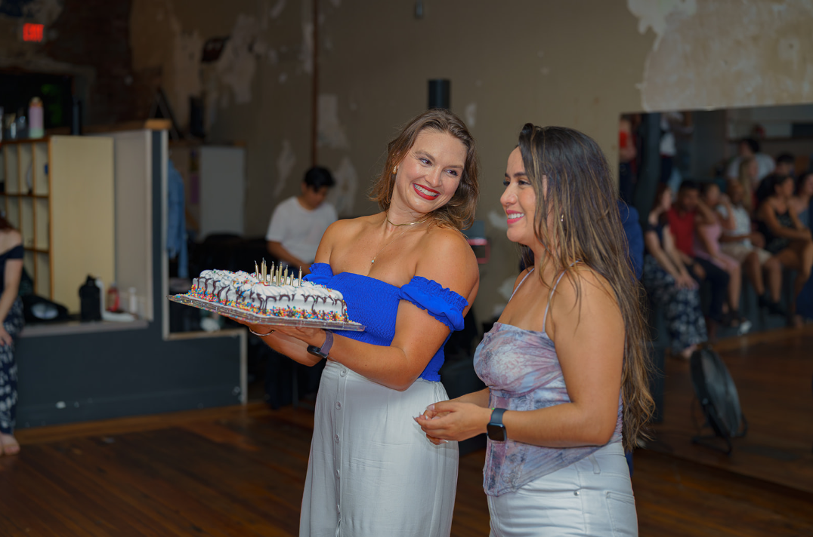
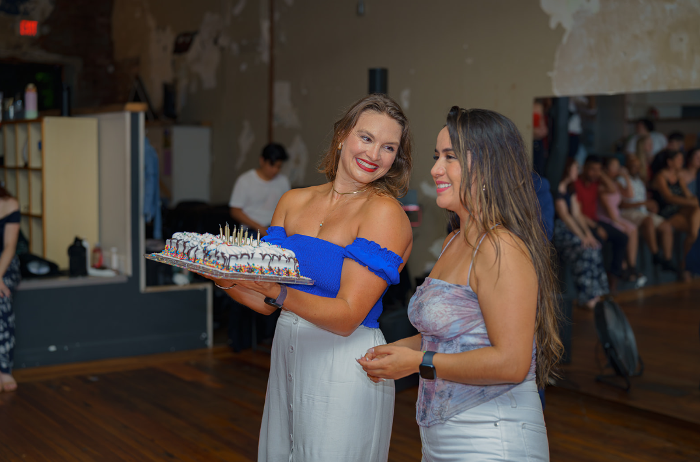
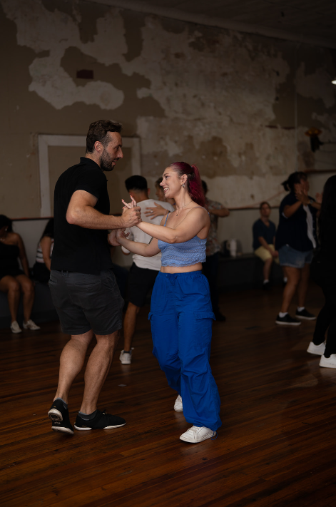
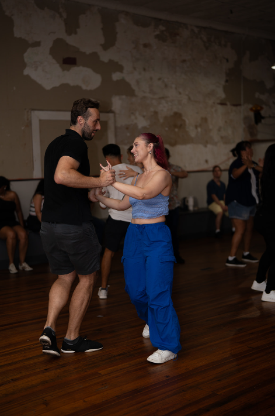

Why ChattaLatin
What is ChattaLatin?
ChattaLatin Dance Society is a community of dancers who wanted
more: more opportunities to connect, more ways to bring people
together, and more fun nights filled with salsa, bachata, and good
vibes.
🌟 Our mission is simple:
✨ Build up the
Latin dance community in Chattanooga through fun, welcoming
events.
✨ Create a space where everyone feels at
home—whether you’re a complete beginner or an advanced dancer.
What makes us different?
✅ A full hour-long
complimentary dance lesson—more time to learn, more time to
dance!
✅ A BYOB-friendly venue (plus water provided, bring your own
bottles to refill)
✅ Incredible vibes and some of the BEST feedback about our
socials
✅ A welcoming crew ready to connect you with
dancers across the city
We’re here to have FUN, and we want YOU to be part of it! 💃🕺🏽💃🏽🕺
ChattaLatin
ADMINS
Sonia Kaur
Role: Dance Teacher and Admin
What I love about ChattaLatin
I love building community through dance and seeing people connect, laugh, and grow together.
Fun Fact
I used to think dancing wasn’t for me(too feminine)—I thought I was meant to be a martial artist(10 years of Tae Kwon Do)! Now I’m the perfect example that anyone can learn to dance.🥋➡️💃🏽

Libby Schwartz
Role: MC, Admin, and Social Media Manager
What I love about ChattaLatin
On the practical side I love that we get to have an amazing social every month that brings so many dancers together to practice and have fun! 💃And on a deeper level I love the community and connection with true friendships being made! 🤗
Fun Fact
I’ve always loved to dance but never had the opportunity or bravery to get out and learn, this year has been one of growth and learning and I love it. 💛

Carol Flores
Role: Dance Teacher and Admin
What I love about ChattaLatin
---
Fun Fact
--
Manuel Lopez
Role: Dance Teacher, admin and DJ
What I love about ChattaLatin
I love seeing more people get involved in dancing—it’s not only fun, but it also brings more culture to Chattanooga.
Fun Fact
I didn’t like dancing growing up—I was more into soccer, chess, and mountain biking. Now look at me: the DJ of a dance social! 🎶😅
Gallery
ChattaLatin Social Dance


 



 
